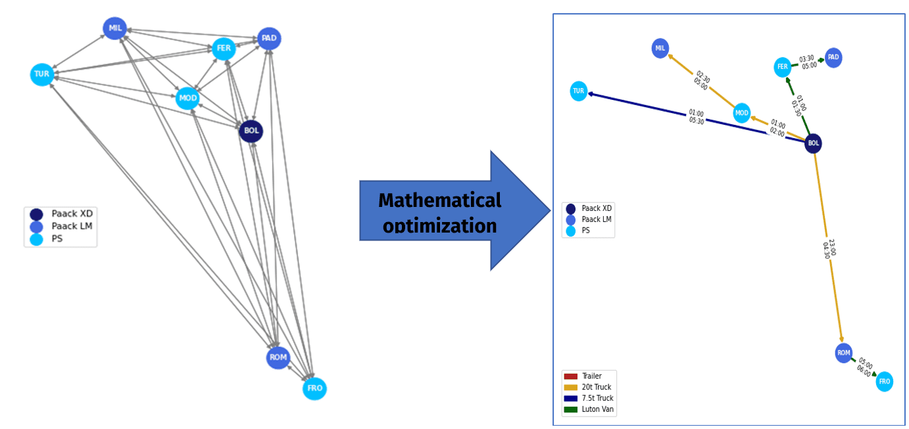
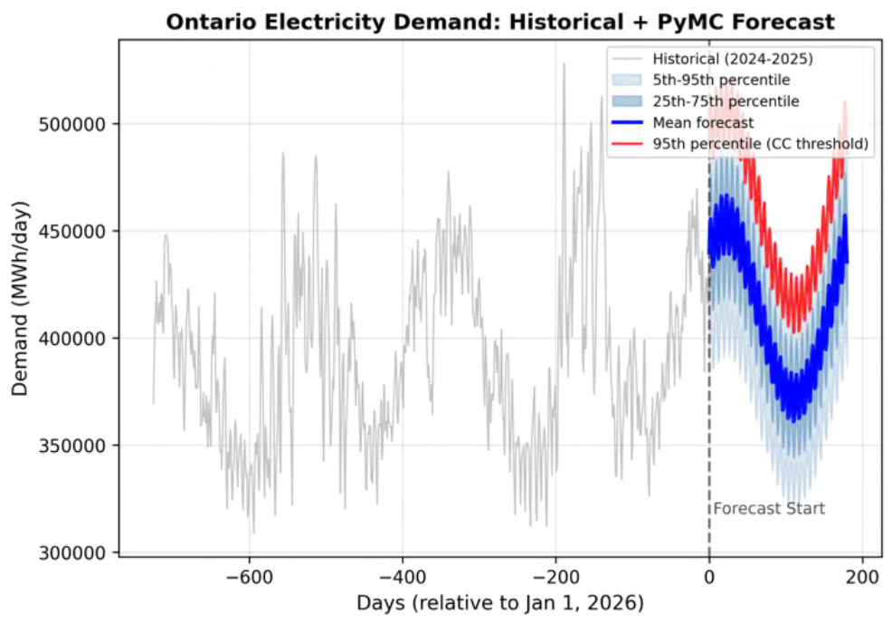
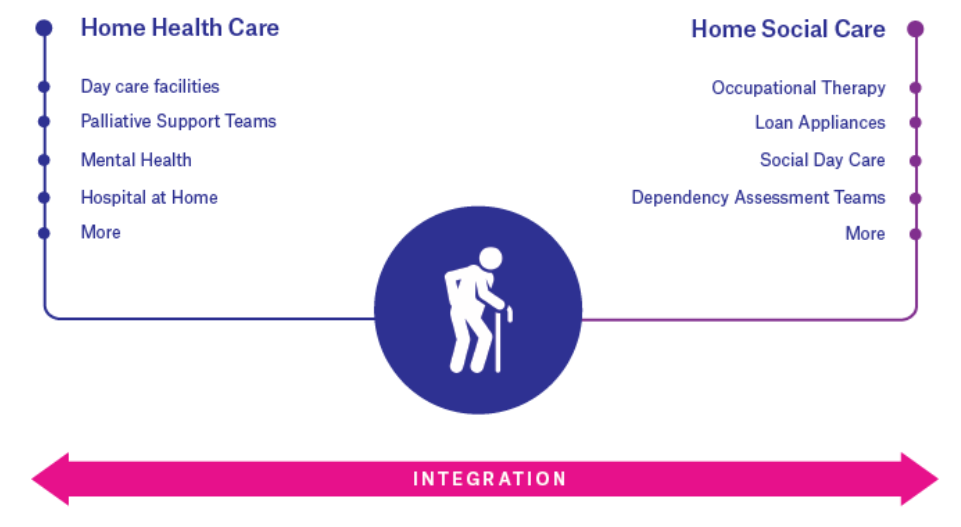
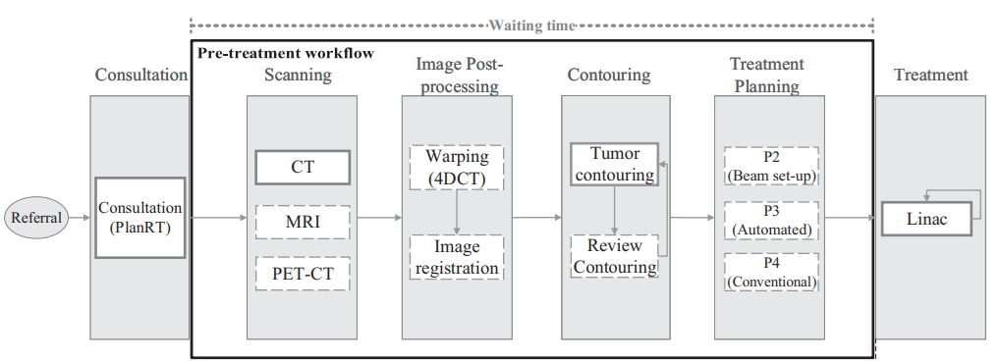

01 / Logistics
Optimizing a line-haul network
Applying operations research to improve line-haul planning, consolidate routes, and make a parcel network more efficient.
Read the Paack case studyOperations research · Optimization · Solver engineering · Metaheuristics
I turn complex operational challenges into reliable optimization systems, combining mathematical modeling, algorithms, and solver-engineering depth.
Projects
A selection across logistics, healthcare, and solver integrations.

01 / Logistics
Applying operations research to improve line-haul planning, consolidate routes, and make a parcel network more efficient.
Read the Paack case study
02 / Energy
Combining probabilistic forecasts and optimization to support energy planning under uncertainty.
Read the energy-planning case study
03 / Healthcare
Using optimization to help plan home-care services while balancing practical trade-offs in care delivery.
Read the home-care case study
04 / Radiotherapy
PhD research on using logistical optimization to improve radiotherapy planning and reduce waiting times.
Read the NKI research storyExperience
I’m a PhD-trained operations research scientist and optimization engineer. I work from problem formulation through solver behavior and implementation, connecting rigorous models with the engineering needed to use them in practice. My experience spans logistics, healthcare, energy, and solver technology.
Senior Software Engineer · Solver Specialist
Worked across solver integrations, optimization support, technical training, notebooks, and AI-enabled resources for optimization users.
Operations Research Scientist
Applied optimization to line-haul network planning and production last-mile routing.
UPF · Netherlands Cancer Institute · University of Twente · INESC TEC
Developed optimization, simulation, and decision-support methods for healthcare, energy, scheduling, and resource-planning problems.
Expertise
I connect sound mathematical models with the solver, code, and operational context needed to make them useful.
01 / Methods
Linear, mixed-integer, and nonlinear optimization; constraint modeling; heuristics and metaheuristics; decomposition; stochastic and multi-objective optimization; simulation.
02 / Solver engineering
Model validation, infeasibility and numerical diagnosis, performance tuning, solver API integration, and optimization pipelines built for real workflows.
03 / Engineering practice
Testing and CI/CD · Version control with Git · Containerization with Docker · Cloud deployment on AWS and GCP.
Python and C/C++; Xpress, Gurobi, CPLEX, SCIP, and OR-Tools; plus modeling tools including Pyomo, PuLP, CVXPY, AMPL, and Mosel.
04 / Applications
Logistics and routing; workforce and home-care scheduling; radiotherapy planning; electricity generation; and resource allocation.
05 / AI integration
LLM-assisted optimization and solver workflows, agent skills, Model Context Protocol (MCP) servers, tool calling, agentic systems, and AI plugins that connect these capabilities to optimization tools.
Strong expertise with Claude (Code), GitHub Copilot, and Codex.
The focus is hybrid OR + AI: use solver-backed evaluation, feasibility and correctness checks, and human oversight to keep AI-assisted decision systems reliable.
Blogs
Technical articles on optimization, solvers, uncertainty, and developer workflows.
Modeling tools
Enhanced Pandas support for building optimization models with familiar data-science workflows.
Solver fundamentals
A practical introduction to choosing a solver that fits your models, requirements, and organization.
Deployment
How containerization can package Python optimization applications for more consistent deployment.
Publications
Peer-reviewed work on healthcare planning, radiotherapy, and energy systems.
Home-care planning · 2022
A decision-support approach tested on a 790-job case study left 2–6 jobs unassigned (0.3–0.8%), while balancing service coverage and practical care-planning trade-offs.
Radiotherapy scheduling · 2021
Clinical comparisons reported a 51% reduction in session-start variability at one center, alongside fewer schedule gaps and machine switches.
Planning under uncertainty · 2018
In the model, the share meeting treatment-start targets rose from 91.3% to 97.9% for subacute patients and from 96.3% to 100% for regular patients; these are modeled, not claimed as realized operational outcomes.
Contact
For professional conversations, research discussions, and potential collaborations:
Prefer LinkedIn? Connect with me